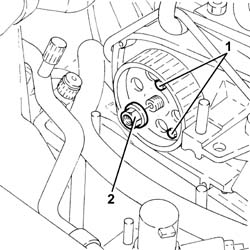
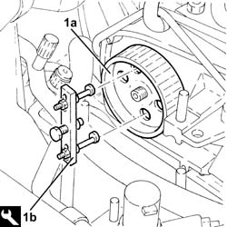
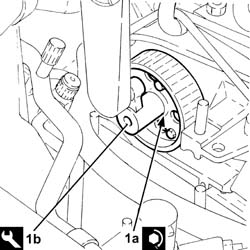

1060E30 pressure pump pulley - r r
- Path
- Procedures > 10 ENGINE > 1060 DIESEL FUEL INJECTION > 1060E diesel pressure pump > 1060E30 pressure pump pulley - r r
- Kind
- repair procedure (removal / refitting; the operation number is the code)
- Applies to
- all engines; all production periods
- Interactive page
- https://sloeber94.github.io/elrnDB-fDbl/en/#/2584491
Applies to: all engines; all production periods
 Removing
Removing
 Refitting
RefittingPosition the vehicle on the ramp.
Proceed with the removal 4450B04 right front wheel r r .
Proceed with the removal 1092G10 single engine belt r r .
Proceed with the removal 1092A10 Crankshaft services PULLEY - R.R. .
Proceed with the removal 1008A46 .
Proceed with the removal 1032D12 timing system protective cover(s) - r + r .
Proceed with the removal 1032B10 toothed timing belt - r + r for timing adjustment or replacement .
1. Screw two bolts in the appropriate seats to stop the rotation of the pressure pump pulley.
2. Undo the pressure pump drive pulley nut.
Remove the two bolts used to stop the rotation of the pressure pump pulley.

Applies to: all engines; all production periods
1. Remove the pressure pump pulley (1a) using the tool (1b).
 | Name | Country |
|---|---|---|
1b | Extractor | 1.860.954.001 |

Applies to: all engines; all production periods
Refitting
RemovingPlace the pressure pump drive pulley back in its housing and secure with the nut but do not tighten.
Screw two bolts in the appropriate seats to stop the rotation of the pressure pump pulley.
1. Tighten the nut (1a) securing the pressure pump drive pulley using tool (1b).
 | Fastening | Component | Ø | Value (daNm) |
|---|---|---|---|---|
1a | Nut | PRESSURE PUMP CONTROL PULLEY | M14 | (Pressure pump side) 4.5 ÷ 5.5 |
| Name | Country |
|---|---|---|
1b | Spanner | 1.857.167.000 |
Remove the two bolts used to stop the rotation of the pressure pump pulley.

Applies to: all engines; all production periods
Proceed with the refitting 1032B10 toothed timing belt - r + r for timing adjustment or replacement .
Proceed with the refitting 1032D12 timing system protective cover(s) - r + r .
Proceed with the refitting 1008A46 .
Proceed with the refitting 1092A10 Crankshaft services PULLEY - R.R. .
Proceed with the refitting 1092G10 single engine belt r r .
Proceed with the refitting 4450B04 right front wheel r r .
Remove the car from the ramp.
Topics linked from this page (6)
- 1008a46 cam shaft left rigid mount - r r
- 1032B10 toothed timing belt - r + r for timing adjustment or replacement
- 1032D12 timing system protective cover(s) - r + r
- 1092A10 Crankshaft services PULLEY - R.R.
- 1092G10 single engine belt r r
- 4450B04 right front wheel r r